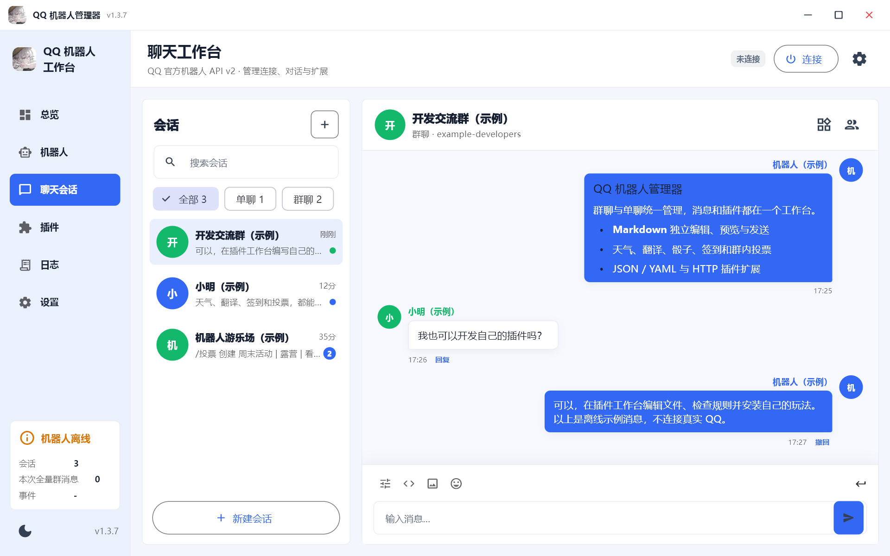

先找到对话，再专注内容
单聊与群聊集中查看，支持会话搜索、昵称头像、引用和图片预览。
基于 QQ 官方开放平台 · 跨平台中文客户端
连接自己的 QQ 机器人，管理单聊与群聊。
认真写一条 Markdown，也随时为它添一个新玩法。
Windows · macOS · Android · iOS · Linux 网页版
真实客户端运行画面

点击放大查看 ↗单聊与群聊集中查看，支持会话搜索、昵称头像、引用和图片预览。
新消息不打断当前阅读；自己发送成功后，回到最新消息。Markdown 有独立编辑与预览区。
插件、日志与设置从左侧导航进入。文件编辑、脚本／规则校验与试运行都在插件工作台完成。
为机器人的日常管理而做
不是个人 QQ 登录工具
使用自己的官方机器人应用
文字与 Markdown 分开操作，编辑、预览、发送一处完成。支持媒体与按钮配置，桌面端 Enter 发送、Ctrl + Enter 换行。
Beta 4 起可直接导入、编辑跨平台脚本，也支持 JSON / YAML 规则与 HTTP 服务。命令、权限、冷却与回复上下文由宿主管理。
链接在应用内浏览，电脑默认电脑版，手机默认手机版。Linux 版通过浏览器管理；桌面客户端支持自定义标题栏与可选的关闭到托盘。
日志可全量复制或导出 TXT / LOG。新版以弹窗展示说明和安装入口，下载后核验签名与安装包完整性。
成员加入、退出和入群申请集中在通知中心，待审核、未读与已处理可筛选。同意或拒绝前再次确认，不默认拉黑申请人。
群聊设置里查看人数、机器人身份、成员资料与禁言状态；长按会话可免打扰。Android／iOS 支持在线收到消息时的系统通知，群管理需对应平台权限。
随附插件，从常用到有趣
动态帮助菜单、连通测试、时间查询和文本复读。
/帮助/ping使用高德接口查询天气、预报、城市编码与指定 IP。
天气 北京/forecast 上海骰子、硬币、选择、转盘、打乱、随机数和猜拳。
/骰子 2d6+3/选择 茶 | 咖啡按命令触发文本翻译与代码注释翻译，按需调用 DeepSeek。
/翻译 Hello/注释翻译签到积分、会话排行榜、今日运势与抽签。
/签到/今日运势猜数字、群内投票与可选的 Markdown 按钮互动。
/猜数字 开始/投票 结果天气、翻译需要自行配置服务 Key；Markdown、按钮与群内免 @ 取决于机器人已获得的平台权限。积分、运势与抽签仅供娱乐。
文档就在这里，不用来回翻仓库
SCRIPT / JSON / YAML / HTTP
完整手册包含安装流程、命令匹配、模板变量、权限与群消息、Markdown / 媒体 / 按钮、HTTP 协议、跨平台脚本 SDK 和文件工作区说明。
右侧是可以直接导入的完整规则清单。导入后检查权限、校验并启用，发送 /myhello 测试 即可尝试。
{
"schema_version": 2,
"id": "my_hello",
"name": "我的问候",
"version": "1.0.0",
"description": "问候命令示例",
"runtime": "rules",
"permissions": ["message:read", "message:send"],
"rules": [{
"match": {"type": "command", "value": "myhello"},
"message": {
"format": "text",
"content": "你好，{{sender_name}}！参数：{{args}}"
}
}]
}准备好，就从这里开始
准备自己的官方机器人，确认需要的接入环境和平台权限。
v1.3.8 起可按首次引导使用手机 QQ 扫码授权，也可手动填写 AppID 和密钥。引导随时可跳过。
在插件中心按需配置、启用插件，也可以导入自己的规则清单。在设置“关于”可重新查看使用引导。
选一个你顺手的设备
x64 · 安装版 EXE
读取下载地址…按安装向导操作；更新包下载后会校验完整性，再打开安装程序。
正式版本发布后显示Universal · DMG
读取下载地址…兼容 Apple Silicon 与 Intel。打开 DMG，将应用拖入 Applications。
正式版本发布后显示Universal · APK
读取下载地址…下载后按系统提示授权安装。手机切到后台后，连接可能被系统暂停。
正式版本发布后显示arm64 · 未签名 IPA
读取下载地址…需使用自己的有效证书签名后安装，可导入全能签；不是 App Store 或免签直装包。
正式版本发布后显示当前构建未做 Developer ID 签名与 Apple 公证。首次打开如遇拦截，请先核验下载来源与校验值，再按系统“隐私与安全性”中的提示确认。不要关闭全局安全保护。
LINUX / WEB CONSOLE
不只支持 Ubuntu，符合运行库要求的 x86_64 Linux 均可检测安装。通过 23336 端口管理机器人、聊天、Markdown 与插件，电脑和手机自动适配。新版安装器自动下载安装、校验并配置后台服务。
Linux 服务包从 Beta 5 起提供，正在检查可用版本。
先验证服务器所有权，再在网页设置自己的管理员密码和专属安全入口；未完成不能使用。之后使用完整入口地址登录，根地址不显示登录页。支持局域网与公网配置，公网推荐 HTTPS。
自动安装器与安全入口从 1.3.9 起提供，升级保留密码与数据。查看完整安装教程 →
正在读取版本说明…